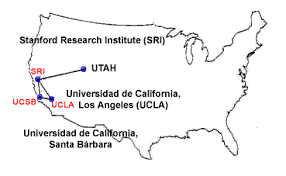

1969 - ARPANET
El Nacimiento de Internet

Red ARPANET - Las primeras conexiones (1969)
¿Qué fue ARPANET?
ARPANET (Advanced Research Projects Agency Network)
fue la primera red de computadoras que utilizó el protocolo de conmutación de paquetes.
Desarrollada por el Departamento de Defensa de Estados Unidos, esta red sentó las bases
de lo que hoy conocemos como Internet.
Contexto Histórico
En plena Guerra Fría, Estados Unidos buscaba crear una red de comunicaciones
descentralizada que pudiera resistir ataques nucleares. La ARPA (Advanced Research Projects Agency)
fue la encargada de desarrollar esta tecnología revolucionaria en 1969.
Las Primeras Conexiones
El 29 de octubre de 1969, se estableció la primera conexión entre dos computadoras:
una en UCLA (Universidad de California, Los Ángeles) y otra en el Stanford Research Institute.
Instituciones Inicialmente Conectadas:
- Universidad de California, Los Ángeles (UCLA)
- Stanford Research Institute (SRI)
- Universidad de California, Santa Barbara (UCSB)
- Universidad de Utah
El Primer Mensaje
|
Dato curioso: El primer mensaje enviado fue un simple "LO",
un intento fallido de escribir "LOGIN" que causó un colapso del sistema. A pesar del fallo,
este momento marcó el inicio de la era digital.
|
Especificaciones Técnicas
| Característica |
Detalle |
| Año de creación |
1969 |
| Velocidad de Transmisión |
50 kbps (kilobits por segundo) |
| Tecnología |
Conmutación de paquetes |
| Tipo de Conexión |
Líneas telefónicas dedicadas |
| Computadoras Usadas |
IMP (Interface Message Processors) |
| Protocolo Inicial |
NCP (Network Control Protocol) |
Impacto y Legado
ARPANET demostró que era posible crear una red de comunicaciones descentralizada y confiable.
Los principios establecidos en esta red son la base del Internet moderno
que usamos hoy en día.
Logros Importantes:
- Primera red de conmutación de paquetes funcional
- Demostración de comunicación entre computadoras distantes
- Base para el desarrollo del protocolo TCP/IP
- Inspiración para redes académicas y comerciales posteriores
📚 Enlaces Relacionados
Para más información sobre ARPANET, consulta:
|